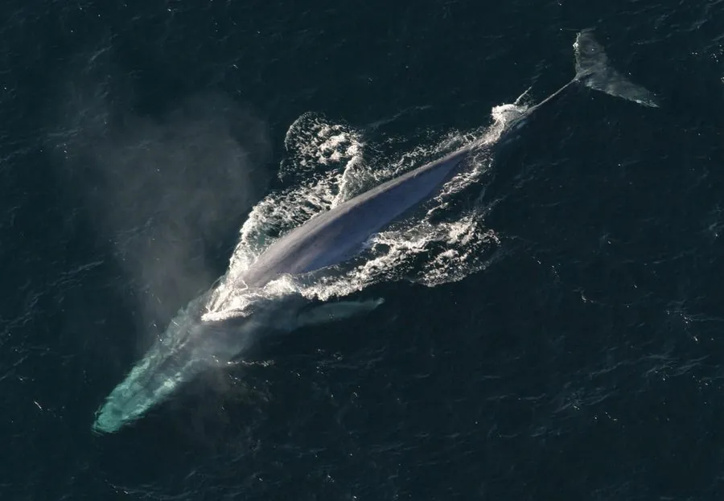

哺乳动物 · 动物界
蓝鲸 Balaenoptera musculus

现存体型最大的动物，体长可超过 30 米，主要以磷虾为食，靠低频叫声在广阔海域中远距离联络。
- 分类
- 门脊索动物门纲哺乳纲目偶蹄目科须鲸科属须鲸属
- 栖息环境
- 全球各大洋的冷水与温带海域，觅食期集中在高纬度富营养水域
- 地理分布
- 从南极海域、北太平洋到北大西洋和印度洋，呈全球分布
- 保护级别
- IUCN 濒危（EN）；CITES 附录Ⅰ
物种志
蓝鲸体长 24–30 米，最长记录超过 33 米，体重可达 150 吨以上，雌性大于雄性，是地球现存最大的动物。它的身体呈细长的纺锤形，背部蓝灰色带有斑驳浅斑，腹部有 60–90 条纵向褶沟，喷气水柱可高达 9–12 米。
蓝鲸分布于全球各大洋，从极地到热带都有记录，但更偏好冷水海域，常在南极、北太平洋和北大西洋的富营养水域觅食。它几乎只吃磷虾，夏季每天可吞食 2–4 吨；捕食时张口冲入虾群，用鲸须滤下食物，再把海水挤出。蓝鲸的叫声低沉，频率低于人类听觉下限，可在海水中传播数百公里。雌鲸妊娠期约 10–12 个月，每胎 1 仔，幼鲸每天可增重约 90 kg。20 世纪的大规模捕鲸使其数量锐减，如今仍属濒危。
形态与习性
- 食性几乎只吃磷虾，夏季每天可吞食 2–4 t
- 体长24–30 m，最长记录超过 33 m
- 体重可达 150 t 以上，雌性大于雄性
- 寿命约 80–90 年
- 繁殖妊娠期约 10–12 个月，每胎 1 仔
- 喷气高度水柱可达 9–12 m
- 叫声低于人类听觉下限的低频声波，可传数百公里
趣味知识
- 蓝鲸是现存最大的动物，心脏重量可达 180 kg 左右。
- 蓝鲸的舌头比一头大象还重，张口时褶沟撑开可容纳大量海水。
- 幼鲸每天喝母乳后能增重约 90 kg，生长速度惊人。
- 蓝鲸的低频叫声低于人类听觉下限，能传到数百公里外。